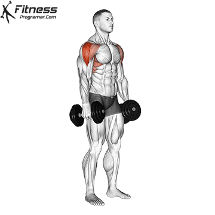

Lateral raises are great exercises to build up your shoulder muscles! They involve a simple movement typically done with weights.
As with any exercise, of course, you must take care to learn proper lateral raises form and avoid common mistakes.
Lateral raises add width and definition to your shoulder area if done consistently and correctly. This exercise is extremely effective in building muscle, and there are a wide variety of adaptations for you to choose between. This will allow you to exercise the muscles from different angles with different types of equipment.
This is an isolation exercise meant to make your deltoids and trapezius muscles stronger.The most basic variation includes lifting weights up and out from your body in a rotating movement.
You can do lateral raises with resistance bands, cables, weight plates, dumbbells, or anything that is heavy or provides resistance.
This is a common part of upper body workouts when done in conjunction with push-ups, pull-ups, or presses.

Dumbbell Lateral Raise Instructions
1. The dumbbell lateral raise is a good exercise for building width in your upper body which gives you the "V" shape. Grab a set of dumbbells and stand straight up with the dumbbells at your sides.
2. Your palms should be facing your body. You should be holding the dumbbells slightly off your body, as this keeps the tension on the side delts. This is your starting position for the exercise.
3. To execute, slowly raise the dumbbells up to around shoulder height. It's important that you do not let your wrists go above your elbows while raising the weight, as this will take the work off the side delts and put it on the front delts.
4. Pause at the top of the movement, and then slowly lower the weight back to the starting position.
5. Do not let the dumbbells touch your body, and then raise them for the next rep.
​Lateral Raise Tips:
1. The dumbbell lateral raise is one of those exercises that so many people do incorrectly. First, this is an isolation exercise, so you should be focusing on stretch and muscle contraction, not using heavy weights.
2. Second, you MUST keep your rep timing slow and controlled. So many people use momentum to swing heavy weights up, and this is not going to get you the best results from the dumbbell lateral raise.
3. Third, it very important that your elbows stay above your wrists. If your wrists come up too far, the focus comes off your side delts and onto your front delts. A good trick to ensure this does not happen is to tilt the dumbbells down as if you were pouring a jug of water as you raise them up. This makes it very hard to raise the wrists higher than the elbows.
4. And finally, keep the side delts under stress for the whole set by not allowing the dumbbells to touch your body or "hang" at the bottom of the movement.